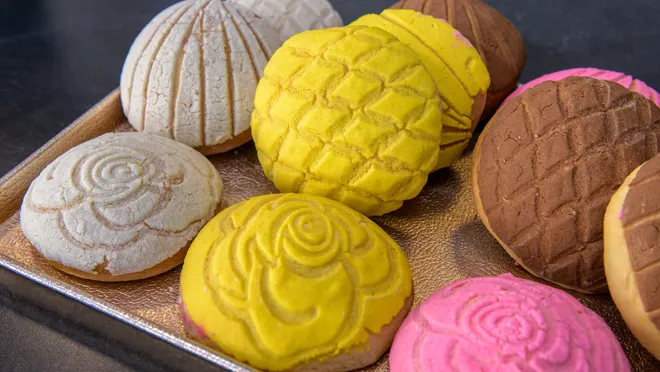
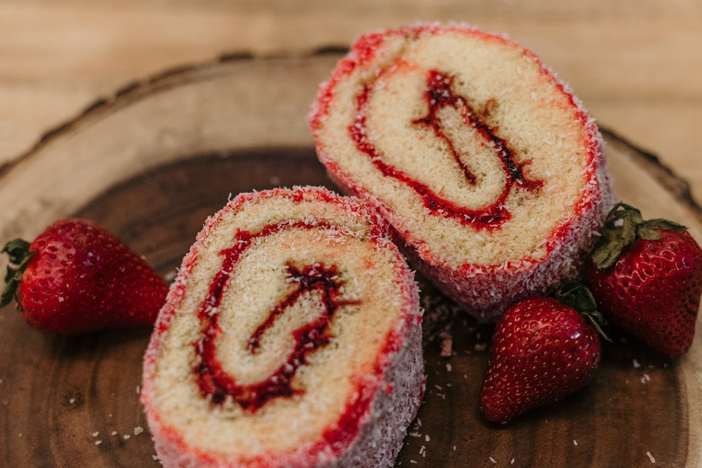
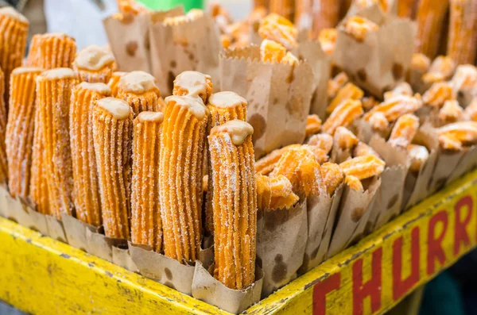

About
Sweet treat with a seashell surprise: Conchas, a Mexican sweet bread (pan dulce), live up to their name ("concha" means "shell" in Spanish) with their distinctive shell-like topping. Flavorful inside and out: The rich, soft dough, typically flavored with vanilla or chocolate, is a perfect base for the sugary, crumbly topping. A taste of Mexico: Conchas are a beloved part of Mexican cuisine, enjoyed with coffee or hot chocolate. You'll find them in most Mexican bakeries, and they're popular in other parts of Latin America too.
Products
Conchas
Sweet treat with a seashell surprise: Conchas, a Mexican sweet bread (pan dulce), live up to their name ("concha" means "shell" in Spanish) with their distinctive shell-like topping. Flavorful inside and out: The rich, soft dough, typically flavored with vanilla or chocolate, is a perfect base for the sugary, crumbly topping. A taste of Mexico: Conchas are a beloved part of Mexican cuisine, enjoyed with coffee or hot chocolate. You'll find them in most Mexican bakeries, and they're popular in other parts of Latin America too.
Niño Envuelto
A Mexican delight: Niño Envuelto This delightful dessert, also known as a Swiss roll, is a light and airy sponge cake rolled around a sweet filling. Imagine fluffy cake embracing fruit preserves, jelly, or even cream! Often dusted with powdered sugar and adorned with fruits or chocolate, Niño Envuelto translates to "wrapped child" in Spanish, reflecting its lovely rolled appearance. Enjoyed for its contrasting textures and flavors, this is a popular treat for celebrations and special occasions.
Churros
Crunchy, airy perfection: Churros, those delightful fried-dough pastries, are a staple of both Spanish and Latin American cuisine. Simple yet delicious: Made with a basic dough of flour, water, and salt, churros are shaped with a star-shaped nozzle for their signature ridges and then deep-fried to crispy perfection. A flavor explosion: Coated in sugar for a delightful sweetness, churros can be enjoyed plain or dipped in chocolate, caramel, or dulce de leche. The contrasting textures - a crunchy exterior and a soft, airy inside - make them truly irresistible. Sweet on the go: Whether you find them at street vendors, churrerías, or fairs, churros are a popular handheld treat or dessert.
Want to see if you'll win a prize?
Click on the button to see if you land a prize!
Contact Us
Please tell us what you think!